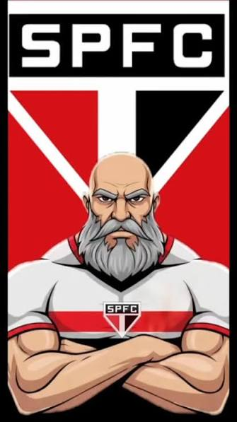

Fundação: 25 de janeiro de 1930
O Clube da Fé nasceu da união de dissidências do Paulistano e da AA das Palmeiras, adotando as cores vermelho, branco e preto. Ao longo de sua história, o São Paulo construiu a fama de "Soberano", erguendo o Cícero Pompeu de Toledo (Morumbi) e consolidando uma das infraestruturas mais invejáveis das Américas.
O Tricolor Paulista tornou-se sinônimo de excelência internacional nas mãos de Telê Santana no início dos anos 90, encantando o mundo com as vitórias nos Mundiais contra Barcelona (92) e Milan (93). A consagração máxima da era moderna veio em 2005 com o tri Mundial no Japão e a histórica passagem do capitão e ídolo máximo Rogério Ceni, o maior goleiro-artilheiro de todos os tempos. Além disso, foi a primeira equipe a ser tricampeã brasileira de forma consecutiva nos pontos corridos.